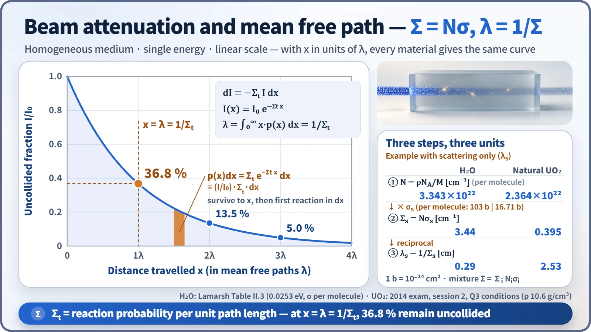
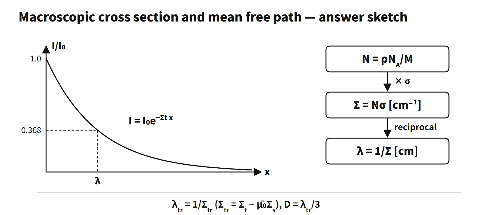

Reactor Physics & Kinetics · C-RX-017
Macroscopic Cross Section and Atom Density — From N = ρN_A/M to Σ = Nσ and λ = 1/Σ
From number density to reaction probability per unit length and the mean free path, with the thermal-averaging conventions and worked examples.
The atom density N is the number of atoms (or molecules) per unit volume [cm⁻³], and the macroscopic cross section Σ = Nσ is the probability per unit path length that a neutron undergoes the reaction [cm⁻¹]; its reciprocal is the mean free path λ = 1/Σ.
In short, Σ = Nσ is the reaction probability per unit length (cm⁻¹), and its reciprocal is the mean free path.
Principle and mechanism
Number density: single element, compound, mixture
| Case | Equation | Note |
|---|---|---|
| Single element | N = ρNA/M | ρ [g/cm³], M [g/mol] |
| Compound | Ni = ni·ρNA/Mmol | ni = atoms per molecule (2 for O in UO₂) |
| Mixture | Ni = wi·ρNA/Mi | wi = mass fraction |
| Macroscopic cross section | Σ = Σi Niσi | 1 b = 10⁻²⁴ cm² |
Enrichment is usually given in w/o (mass fraction). For 3 w/o UO₂ the mean atomic weight of uranium follows from 1/MU = 0.03/235.04 + 0.97/238.05, giving MU = 237.96 and MUO₂ = 269.96. The uranium mass fraction is 0.8815 and the U-235 atom fraction 0.0304. At a density of 10 g/cm³, NUO₂ = 2.231×10²² and N₂₅ = 6.78×10²⁰ cm⁻³.
For water, N = 1.0×6.022×10²³/18.015 = 3.343×10²² molecules/cm³, and the number of hydrogen atoms is twice that. At 2200 m/s, σa = 0.664 b per molecule, so Σa = 0.0222 cm⁻¹, and σs = 103 b per molecule, so Σs = 3.44 cm⁻¹ (Lamarsh Table II.3). The scattering mean free path λs is 0.29 cm and the absorption mean free path λa is 45 cm: at 2200 m/s values, about 155 scatterings (Σs/Σa) per absorption. The 103 b is larger than the sum for free atoms (about 44 b) because of chemical binding in the thermal range, which is why the molecular cross section is used.
From beam attenuation to the mean free path

The fraction that reacts in a thin layer dx is Σt·dx. So dI = −ΣtI·dx, and the uncollided beam decreases as I(x) = I₀e−Σt x. The probability that a neutron reaches x without reacting is e−Σt x. The probability that it then reacts for the first time within dx is p(x)dx = Σt e−Σt xdx, whose integral from 0 to ∞ is 1. The mean distance travelled is λ = ∫x·p(x)dx = 1/Σt. After one λ the uncollided beam falls to e⁻¹ = 36.8 %, and after 3λ to 5.0 %.
When scattering is forward-peaked, the actual diffusion distance is longer than λs. This is captured by the transport mean free path λtr = 1/Σtr, with Σtr = Σt − μ̄₀Σs, μ̄₀ = 2/(3A), and the diffusion coefficient D = λtr/3. For hydrogen μ̄₀ ≈ 0.67, so the difference is large.
Reaction rate and 1/v and non-1/v corrections
The reaction rate is R = Σφ [reactions/cm³·s], and power is P = ER·Σf·φ·V. Most thermal absorption cross sections are proportional to 1/v. The absorption rate is then Fa = Σa(E₀)·nv₀ = Σa(E₀)·φ₀, independent of the spectrum, where E₀ = 0.0253 eV, v₀ = 2,200 m/s, and φ₀ is the "2200 m/s flux".
For nuclides that depart from 1/v, the Westcott non-1/v factor g is applied: Fa = ga(T)·Σa(E₀)·φ₀.
| Nuclide | 20 °C | 400 °C | Reason |
|---|---|---|---|
| U-235 gf | 0.9759 | 0.9208 | Falls slightly faster than 1/v |
| U-238 ga | 1.0017 | 1.0085 | Almost 1/v |
| Pu-239 gf | 1.0487 | 1.6904 | 0.3 eV resonance |
| Sm-149 ga | 1.6170 | 2.1854 | 0.1 eV resonance |
| Cd ga | 1.3203 | 2.5589 | 0.18 eV resonance |
(Lamarsh Table 3.2, Westcott AECL-1101)
One-group calculations use the thermal flux φT integrated over the whole Maxwellian. In that case φ₀ = (√π/2)(T₀/T)½·φT (T₀ = 293.61 K), so the average cross section is:
Σ̄_a = (√π/2)·ga(T)·(T₀/T)½·Σa(E₀)
The factor is 0.887 at 20 °C, 0.634 at 300 °C and 0.585 at 400 °C. Multiplying water's Σa of 0.0222 by 0.887 gives 0.0197 cm⁻¹, matching the thermal average in Lamarsh Table 5.2. When the reaction rate is written with φ₀, however, only g is applied, without this factor; mixing the two conventions applies the 0.886 factor twice. Also, T is the neutron temperature, not the moderator temperature: absorption hardens the spectrum, so the neutron temperature is higher than the moderator's.
What it means in a plant
- Core design: core analysis codes multiply the nuclide densities Ni (which change with burnup) by group cross sections to build Σ, then perform diffusion or transport calculations. In the four-factor formula, η = νΣfF/ΣaF and f = ΣaF/Σa are both ratios of Σ.
- Moderator: the slowing-down power ξΣs and the moderating ratio ξΣs/Σa are also defined with Σ. Water has a large Σs, so its slowing-down length is short.
- Temperature and density feedback: when moderator temperature rises, density falls and N and Σ fall with it, while spectrum hardening also changes the average cross sections. This is where the MTC starts.
- Linear power and burnup: Σfφ is the fission rate.
Worked examples
Example 1 — PWR core quantities (PWR: 1,000 MW electric, efficiency 33 %, UO₂ 100,000 kg, ρ 10 g/cm³, 3 w/o, 150 assemblies × 200 rods, core height 3.5 m, 200 MeV per fission, 3×10⁻¹¹ J deposited in the fuel, σf 400 b)
| Part | Working | Result |
|---|---|---|
| (1) Thermal power | 1,000/0.33 | 3,030 MWt |
| (2) N₂₅ | 0.0304 × 2.231×10²² | 6.78×10²⁰ cm⁻³ |
| (3) Σf | 6.78×10²⁰ × 400×10⁻²⁴ | 0.271 cm⁻¹ |
| (4) U-235 mass | 100,000 × 0.8815 × 0.03 | about 2,644 kg |
| (5) Average linear power | 9.46×10¹⁹ /s × 3×10⁻¹¹ J ÷ 105,000 m | 27.0 kW/m |
The loading is taken as the UO₂ mass (3,000 kg if it is the U mass). The fission rate in (5) is 3.03×10⁹ W ÷ 3.204×10⁻¹¹ J; dividing the full thermal power instead gives 28.9 kW/m.
Example 2 — three-group balance (Na fast reactor, three groups). Group 3 data: σ_γ 0.001 b, φ₃ 3×10¹⁵. Scattering transfers: σ1→3 0.06 b (φ₁ 6×10¹⁴), σ2→3 0.18 b (φ₂ 1×10¹⁵).
- N = 0.97×6.0×10²³/29 = 2.01×10²² cm⁻³. The actual atomic weight of Na is 22.99, which would give N = 2.54×10²², but the example uses the stated value.
- Fa = Nσ_γφ₃ = 6.02×10¹⁰; Fout = 0 (lowest group); Fin = N(σ1→3φ₁ + σ2→3φ₂) = 4.33×10¹² /cm³·s
- With s₃ = 0, Fdiff = −D₃∇²φ₃ = Fin − Fa − Fout = 4.27×10¹² /cm³·s (net leakage)
Example 3 — scattering in natural UO₂ (natural UO₂, ρ 10.6, σs: U-238 8.3, U-235 10, O 4.2 b): NUO₂ = 10.6×6.022×10²³/270.03 = 2.364×10²². The scattering cross section per molecule is 0.0072×10 + 0.9928×8.3 + 2×4.2 = 16.71 b, so Σs = 0.395 cm⁻¹ and λs = 2.53 cm. The oxygen contribution (0.199) is about the same as that of U-238 (0.195).
Regulatory and design criteria
The items below are examples from US NRC practice and US standards.
- Cross sections themselves are not regulatory values; what is regulated is the validation of nuclear design methods and nuclear data.
- NUREG-0800 SRP 4.3 (Nuclear Design): reviews the validation and uncertainties of calculation methods and cross-section libraries.
- 10 CFR 50 Appendix A, GDC 10, 11, 26 and 28: requirements on the results of nuclear design.
- ANSI/ANS-19.6.1: reload startup physics tests (critical boron concentration, rod worth, temperature coefficient) confirm the predictions.
- Nuclear data versions: the physical definitions are unchanged. Evaluated nuclear data have been updated from ENDF/B-VI → VII.1 (2011) → VIII.0 (2018) → VIII.1 (2024), and thermal cross sections such as the U-235 σf differ by a few barns between versions (about 582–587 b).
Easily confused pairs
| Microscopic cross section σ | Macroscopic cross section Σ | |
|---|---|---|
| Refers to | One nucleus | Material (volume) |
| Unit | b (10⁻²⁴ cm²) | cm⁻¹ |
| Meaning | Effective target area | Reaction probability per length |
| Depends on | Nuclide, energy | + density, composition, temperature |
| Mean free path λ = 1/Σ | Transport mean free path λtr = 1/Σtr | |
|---|---|---|
| Meaning | Average distance to the next reaction | Effective distance corrected for anisotropic scattering |
| Relation | — | λtr = λs/(1−μ̄₀) (absorption neglected), D = λtr/3 |
| 2200 m/s value σ(E₀) | Maxwellian average σ̄ | |
|---|---|---|
| Matching flux | φ₀ = nv₀ | φT (integrated over the whole Maxwellian) |
| Correction | g(T) only | (√π/2)·g(T)·(T₀/T)½ |
Key points at a glance
- Atom density: N = ρNA/M [cm⁻³]; for a compound Ni = ni·ρNA/Mmol.
- Macroscopic cross section: Σ = Nσ [cm⁻¹], for a mixture Σ = ΣNiσi — the reaction probability per unit length.
- Beam attenuation: dI = −ΣI·dx → I(x) = I₀e−Σx.
- First-collision probability: p(x)dx = Σe−Σxdx.
- Mean free path: λ = ∫x·p(x)dx = 1/Σ — 36.8 % remain uncollided after 1λ.
- Transport mean free path: λtr = 1/(Σt − μ̄₀Σs), μ̄₀ = 2/3A, D = λtr/3.
- Reaction rate: R = Σφ; power P = ER·ΣfφV.
- Thermal corrections: 1/v absorbers use the φ₀ = nv₀ basis as is; non-1/v absorbers multiply by the Westcott g; the φT-based average multiplies by (√π/2)(T₀/T)½.
- Example: H₂O Σs 3.44 cm⁻¹ → λs 0.29 cm; Σa 0.0222 → λa 45 cm.
- Bookkeeping: count both oxygen atoms in UO₂, keep w/o and a/o apart, convert UO₂ mass to U mass (×0.8815) when needed, and use 1 b = 10⁻²⁴ cm²; if a stated value is non-standard (such as Na at 29 g/mol), note the discrepancy.
